[소식 · 협객들의 평란 집결] 9월 24일丨입학을 앞두고, 앞길의 아름다운 풍경을 먼저 만나보세요!
9월 24일 새 버전 출시 안내

일주일 뒤인 9월 24일, 신규 버전 「평란기풍파(平澜起风波, 평온한 물결에 풍파가 일다)」가 협객 여러분께 새로운 강호의 장을 펼쳐 보입니다.
9월 19일(이번 주 토요일), 신규 버전 사전 다운로드가 정식으로 시작됩니다. 그때 협객 여러분은 일부 리소스를 미리 다운로드해 업데이트 후 원활하게 길을 나설 수 있습니다.
면적이 개봉 지역 전체에 견줄 만한 항저우 지역의 ‘완전체’가 정식으로 협객 여러분을 찾아옵니다. 앞길은 드넓고 둘러볼 곳도 많습니다. 오늘은 저희와 함께 한발 앞서 곧 도착할 풍광을 살펴보시죠!
우선 서원에 들어가 새로운 친구를 사귀어야겠지요.
오월의 관학인 「평란서원」은 젊은 인재를 널리 받아들이고 실무 중심의 교육을 시행합니다. 학생들은 저마다 성격이 다르고 서원에 들어온 까닭도 제각각이지만, 결국 모두 비슷한 나이의 소년들입니다.
소년다운 패기와 학우 간의 우정, 서호 곁의 이 웅장한 관학이 품은 것은 근심이 드문 소년 시절일 것입니다.
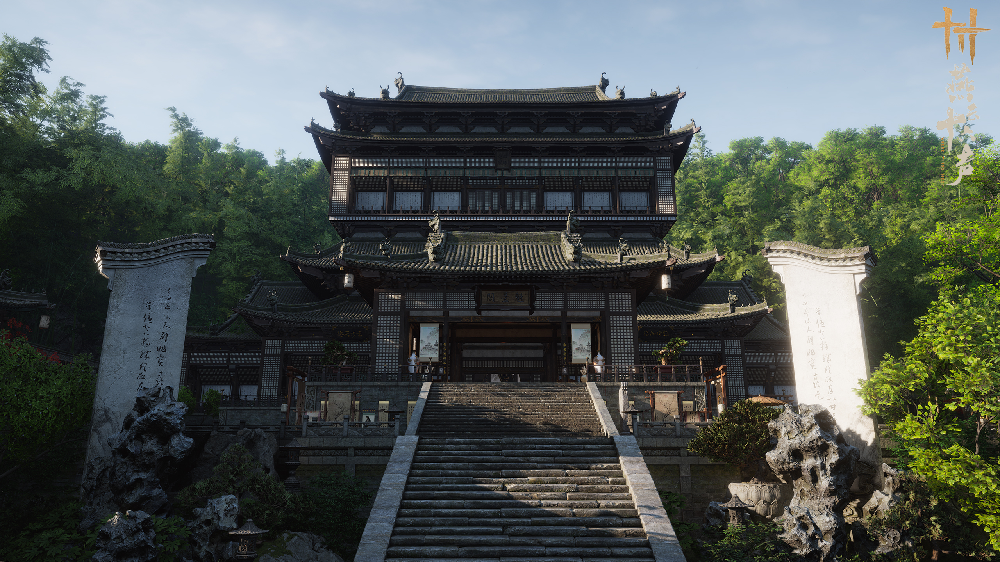
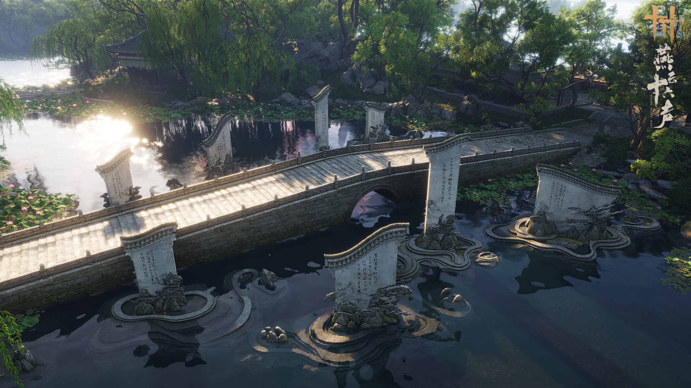
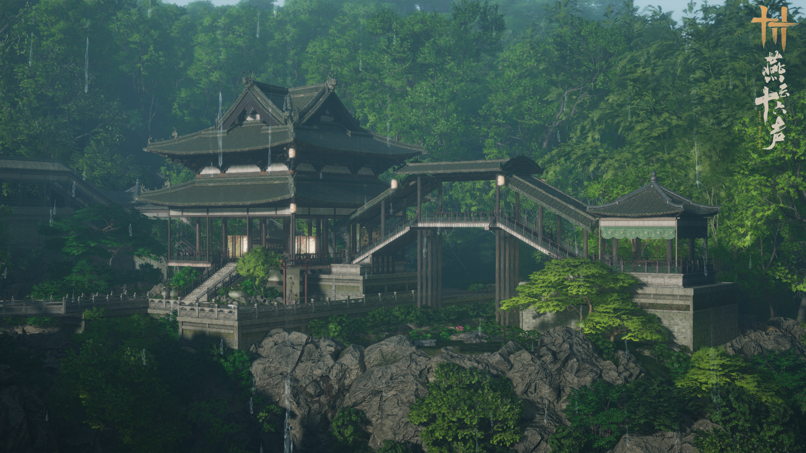
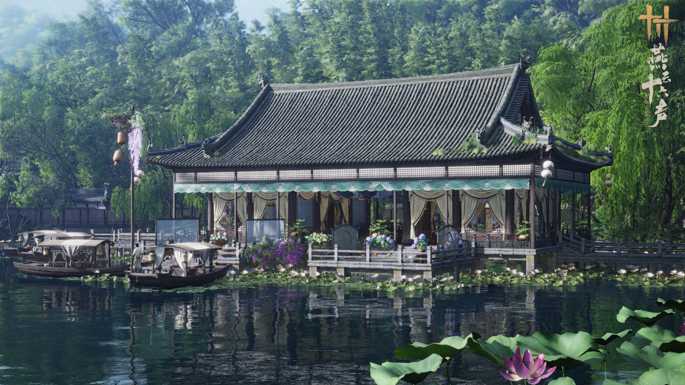
*개발 중인 효과 시연입니다. 최종 출시 내용을 기준으로 삼아 주세요.
관학인 만큼 서원 안의 여러 시설은 당연히 두루 갖추어져 있습니다. 물가 정자와 누각, 서고와 서재는 말할 것도 없고, 학자들이 쉬는 【침려(寝庐, 숙소)】, 몸을 단련하는 【각상포(矍相圃, 활쏘기와 예를 익히던 곳)】, 담소를 나누는 【다사(茶榭, 차를 마시는 정자)】 등도 모두 갖춰져 있습니다.
공자는 “밥은 정갈할수록 좋고, 회는 잘게 썰수록 좋다”고 했으며, 노자도 “큰 나라를 다스리는 것은 작은 생선을 요리하는 것과 같다”고 했습니다. 옛 성현들도 식사에 큰 학문이 담겨 있다고 여겼던 모양입니다. 서원의 식당도 정성을 소홀히 하지 않았습니다. 한 상의 식사와 곳곳의 배치에서 관학의 세심한 마음을 엿볼 수 있습니다. 그 밖의 묘미는 훗날 협객 여러분이 직접 찾아보시기 바랍니다.
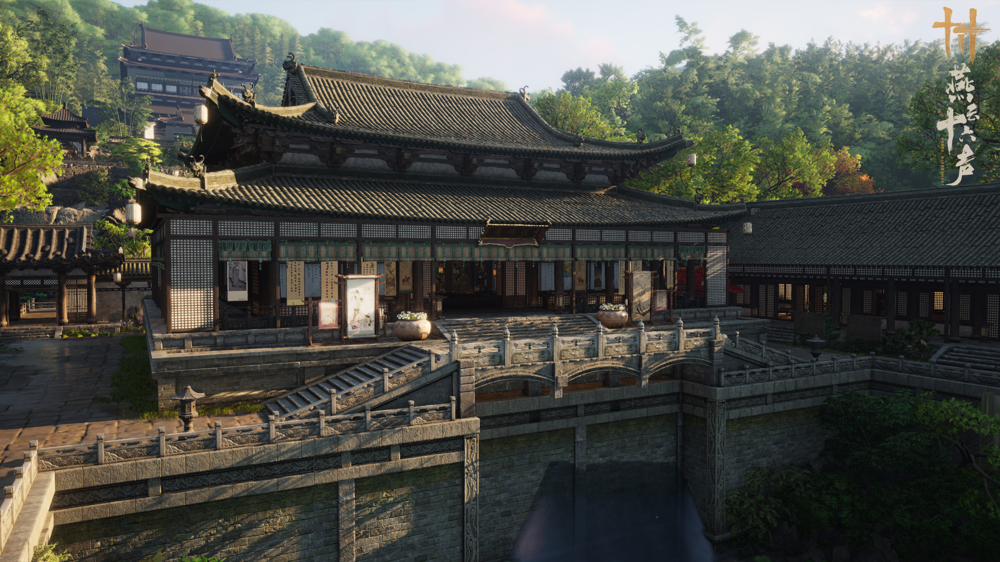
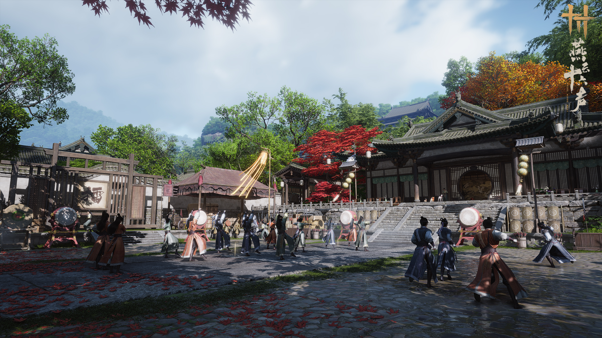
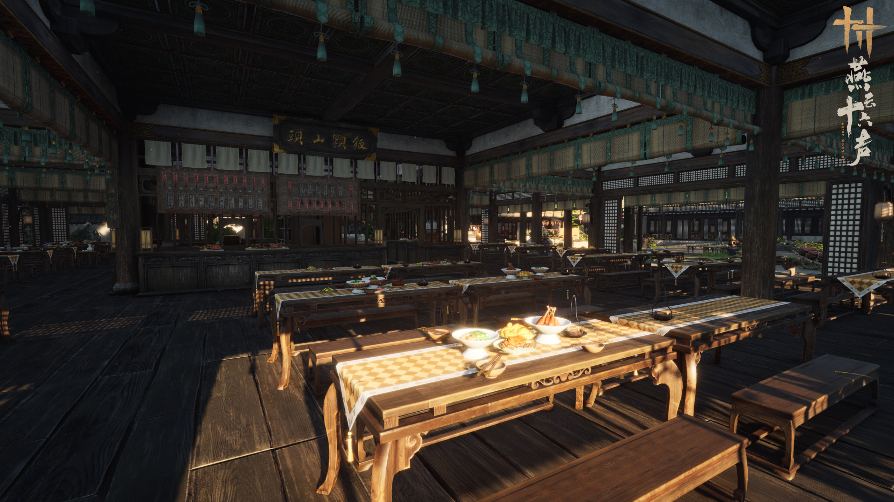
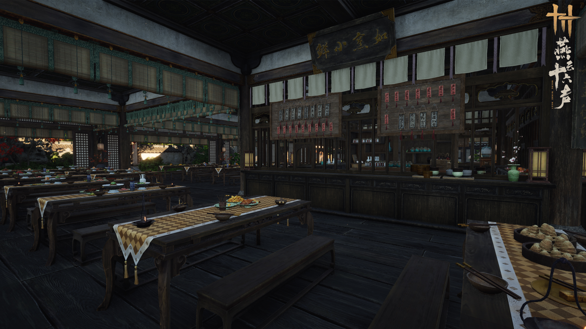
*사전 연구 중인 효과 시연입니다. 실제 적용 결과를 기준으로 해 주세요.
하지만 위의 여러 가지도 결국 서원 안의 환경일 뿐입니다. 서원에서 어떤 삶을 살아갈지는 협객이 직접 결정합니다.
이번에 책을 짊어지고 서원에 들어왔으니, 이치대로라면 스승의 가르침을 듣고 학업에 힘쓰며 심성을 닦아야 합니다. 하지만 소년에게는 소년의 기질이 있고, 강호인에게는 늘 의협심이 있기 마련입니다. 원규에 어긋나지만 모른 체하기 어려운 일을 만난다면, 협객은 어떤 선택을 할까요?
급한 일에 얽힌 동창이 대신 출석해 달라고 부탁한다면, 의리로 도와줄까요, 아니면 규칙을 지킬까요? 누군가 군것질이 당겨 몰래 바깥 음식을 가져오려 한다면, 슬쩍 건네줄까요, 아니면 중간에 가로챌까요?
또 서원의 변소가 오래되어 바람이 불 때마다 삐걱거리고, 실로 학생들의 몸과 마음의 평안을 해친다고 해 봅시다. 동창의 고민 앞에서 의협심 넘치는 강호인인 협객은 기꺼이 손을 보태려 할까요?
의협을 실천하고 부지런히 공부하며 공을 쌓으면 모두 그에 따른 반응이 돌아옵니다. 협객의 선택 하나하나는 ‘학업 공적’(课业功积, 학업으로 쌓은 공적)으로 기록됩니다. 일정 수준에 이르면(각각 독립적으로 계산되며 서로 영향을 주지 않습니다) 특별한 이야기 연출과 시스템 반응을 해금할 기회도 생깁니다. 상장을 받을지 부모님을 모셔 오게 될지는 모두 협객의 행동에 달렸습니다.
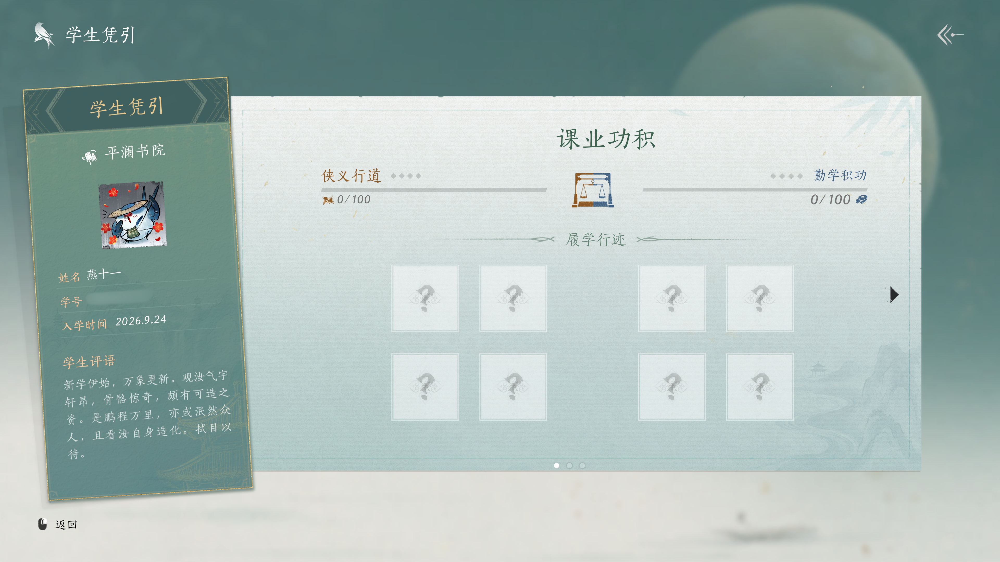
*개발 중인 효과 시연이며, 최종 출시 내용을 기준으로 합니다.
서원에는 별도의 명단도 마련되어 있습니다. 품행이 훌륭한 모범 학생과 학칙을 거듭 어긴 ‘풍운 인물’을 각각 공개합니다. 협객 여러분, 시간이 나면 자주 들러 모범이 되는 이들의 기운을 듬뿍 받아 가세요!
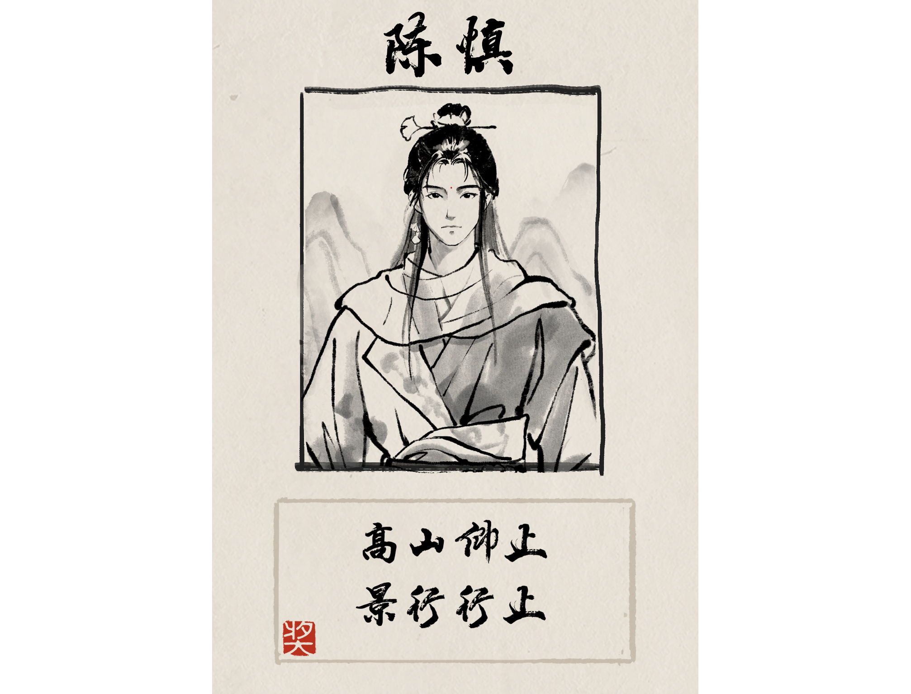
책을 만 권 읽고, 만 리 길을 걷는다. 서원 밖에도 드넓은 세상이 펼쳐져 있다.
【십리상해(十里桑海)】에는 푸른 물이 굽이굽이 흐르고, 검은 천막을 씌운 작은 배가 강가에 정박해 있다. 마을 집들은 푸른 그늘에 가려 있고, 밭고랑과 뽕나무 밭길은 끝없이 펼쳐진다. 협객이 이 고요하고 평화로운 물의 고장을 거닐면 분명 기분이 좋아질 것이다. 마침 좋은 인연이 닿는다면, 협객은 소문을 따라 뽕나무 숲 깊은 곳의 신비한 ‘선고(仙姑)’를 찾아뵙고 또 하나의 강호 기연을 시작할지도 모른다.
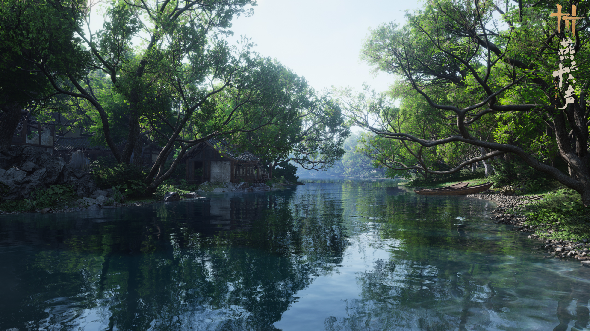
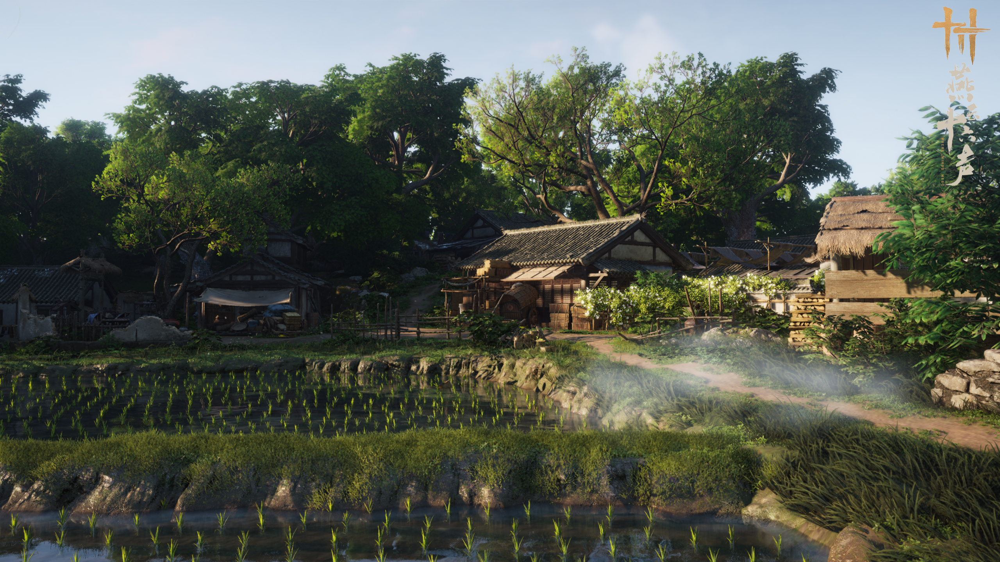
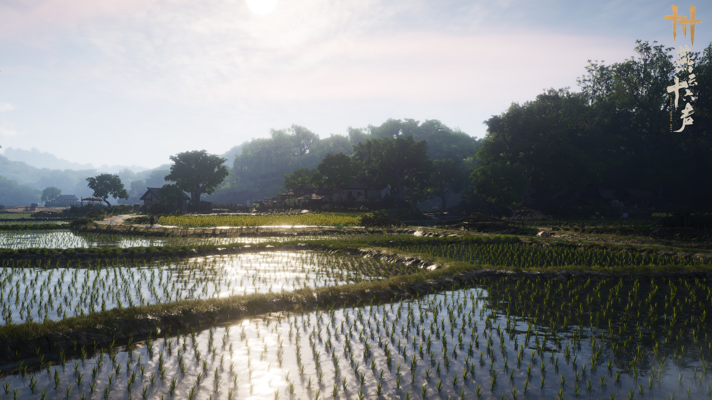
*사전 연구 중인 효과 시연이므로 최종 출시 내용을 기준으로 해 주세요.
앞선 두 곳의 밝고 수려한 풍경과 비교하면, 【전당포(钱塘浦, 전당의 물가)】는 ‘잿빛’의 거친 느낌이 드러납니다.
전당강 강변을 50여 년 동안 지켜 온 해당은 군영의 감독 아래 제방 인부들이 계속 관리하고 있습니다. 조수 재해를 직접 겪은 사람들은 점차 줄어들었고, 이 조수를 막는 긴 제방의 위대함도 사람들의 기억에서 희미해진 듯합니다. 그러나 조수에 맞서 온 굳센 정신은 해당이 굳건히 서 있듯 여전히 이곳에 남아 있습니다. 잡초와 토사도 새로운 생명의 주춧돌이 될 수 있습니다.
강가에는 위대한 역사를 증언하는 【후조정(候潮亭, 조수를 기다리는 정자)】도 있습니다. 사람들은 이곳에 모여 조수를 기다리고 구경하며, 고급 좌석은 빈자리 없이 차고 음악 소리는 끊이지 않습니다. 예전에는 말만 들어도 두려워했던 거센 강물의 조수가 이제는 여유롭게 감상할 수 있는 웅장한 풍경이 되었습니다.
무숙왕은 일찍이 이렇게 썼습니다. ‘길가에 꽃이 피었으니, 천천히 돌아오셔도 됩니다.’ 이제 이 정자에 오른 사람들도 이렇게 말할 수 있겠습니다. ‘강 위로 조수가 밀려오니, 천천히 바라보셔도 됩니다.’
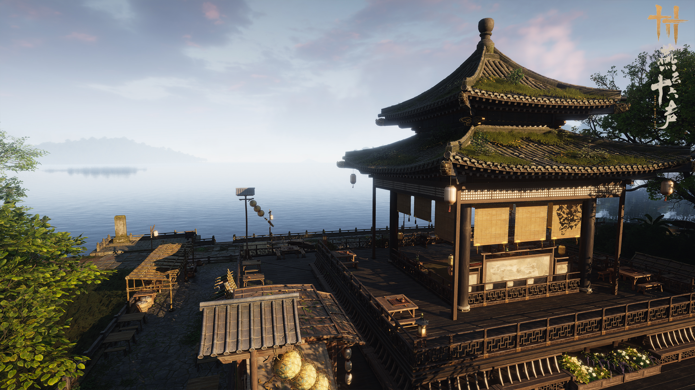
*사전 검증 중인 효과 시연입니다. 최종 출시 내용을 기준으로 해 주세요.
9월 24일, 더 넓은 강호의 세계가 협객 여러분이 직접 찾아와 탐험하기를 기다리고 있습니다.
한편, 현실의 일로 잠시 강호를 떠난 협객 중에는 돌아왔을 때 다른 협객보다 진도가 뒤처질까 걱정해 고민하는 분들이 있다는 점도 확인했습니다.
이에 새 버전에서는 복귀 시스템을 전면 업그레이드해 협객 여러분의 걱정을 덜고, 한결 편안한 마음으로 강호에 돌아올 수 있도록 하겠습니다——
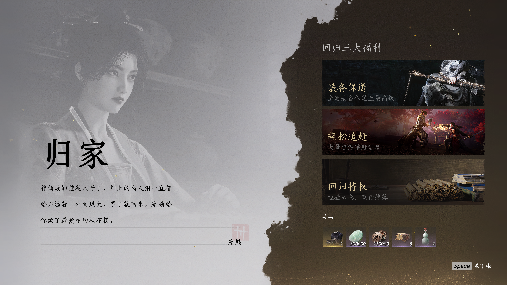
*개발 중인 효과 시연이며, 실제 적용 내용은 정식 출시를 기준으로 합니다.
복귀 보상이 대폭 강화됩니다
협객의 새로운 여정을 돕습니다
협객은 강호를 14일간 떠나 있다가 복귀하면 다음 혜택을 받을 수 있습니다—
• 장비 전 구간 지원, 최고 등급까지 바로 도달
복귀한 협객은 로그인 즉시 현재 단계의 장비 한 세트를 받습니다. 이후 다음 단계가 해제될 때마다 새로운 단계의 장비 한 세트를 추가로 받아 현재 최고 단계까지 지원받을 수 있습니다. 협객은 성장 구간용 장비를 얻는 데 따로 힘을 들이지 않아도 되어, 새로운 콘텐츠를 즐기는 데 더욱 집중할 수 있습니다.
• 풍부한 자원 지원으로 진행 상황을 손쉽게 따라잡기
로그인 즉시 추옥 30만을 지급합니다. 【옛 여정을 다시 걷다】 연속 임무를 완료하면 추옥과 돌파 재료, 심법 심득 등 육성 재료를 추가로 대량 획득해 육성 진행 상황을 빠르게 따라잡을 수 있습니다. 【거위가 찾아온 듯】 이벤트에서 출석하면 장명옥, 은은한 소리·귀속 등의 보상도 받을 수 있습니다.
또한 【옛 여정을 다시 걷다】의 부담을 덜도록 최적화해 임무 수와 임무 조건을 줄였습니다. 새로운 콘텐츠를 즐기는 동안에도 손쉽게 완료할 수 있습니다. 강호를 오래 떠나 있었던 협객은 괜찮은 새 깃털 등의 추가 보상도 받을 수 있습니다.
• 경험치 보너스와 두 배 획득으로 빠른 성장 지원
또한 협객은 복귀할 때 기존의 레벨 따라잡기 경험치 보너스뿐 아니라, 심력 두 배 획득을 직접 선택해 활성화할 수도 있어 여러 방식으로 따라잡기 부담을 더 줄일 수 있습니다.
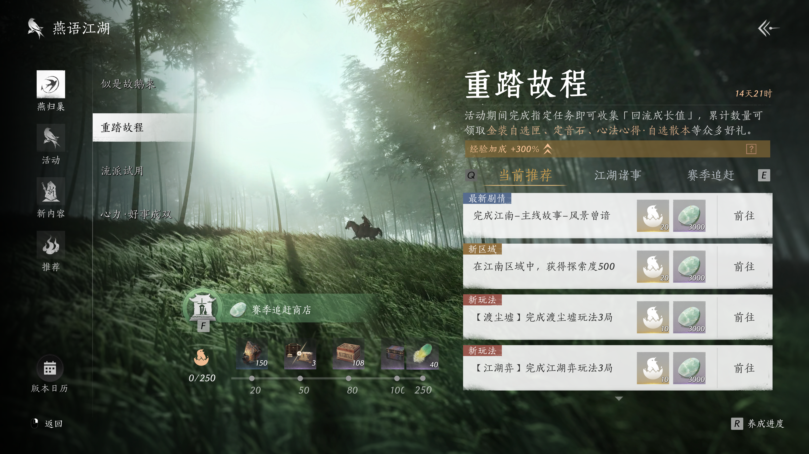
*사전 연구 단계의 효과 시연입니다. 최종 출시 내용을 기준으로 해 주세요.
위 최적화 사항은 9월 24일 정식 출시됩니다.
아울러 최근 복귀했거나 현재 복귀 보상을 받고 있는 유협이 새 버전 보상을 놓칠 수 있다는 점을 고려해, 9월 1일~9월 24일 사이에 복귀한 유협에게도 우편으로 보상을 추가 지급할 예정입니다. 유협 여러분, 걱정은 내려놓고 새로운 여정을 다시 시작해 보세요!
풍성한 가을 명절이 다가옵니다. 재미있는 외형도 몇 가지 더 이번 주에 출시되어 강호에 새로운 멋을 더합니다—
모자 외형 무작위 선물 상자
【좋은 주머니가 왔어요】
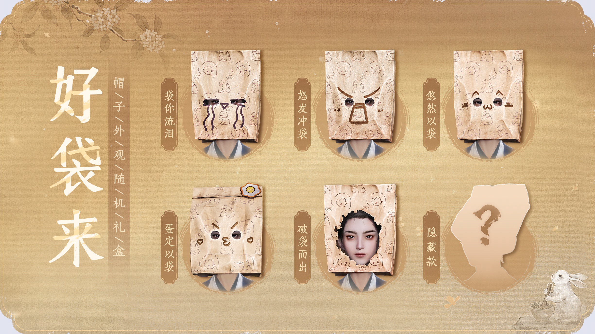
*개발 중 효과 시연입니다. 정식 출시 버전을 기준으로 해 주세요.
주머니를 열면 기쁨이! 좋은 주머니가 왔어요, 좋은 주머니가 왔어요!
모자 외형 랜덤 선물 상자【좋은 주머니가 왔어요】가 9월 19일부터 10월 16일 5시까지 기간 한정으로 판매됩니다. 기간 중 협객은 「상점」에서 60【장명주】로 구매할 수 있습니다. 이 랜덤 선물 상자에는 총 6종의 모자 외형이 들어 있으며(숨겨진 외형 1종 포함), 상자를 열 때마다 획득하는 모자 외형은 중복되지 않습니다.
위의 모자 외형 6종을 모두 모으면 수집 보상인 주인공 프로필 사진【주머니의 대가】를 획득할 수 있습니다. 참고로 이 랜덤 선물 상자는 선물할 수 있으며, 협객 한 명당【좋은 주머니가 왔어요】를 선물로 최대 6개까지 받을 수 있습니다.
기간 한정 외형 패키지
【좋은 날 함께 춤을 선물 상자】
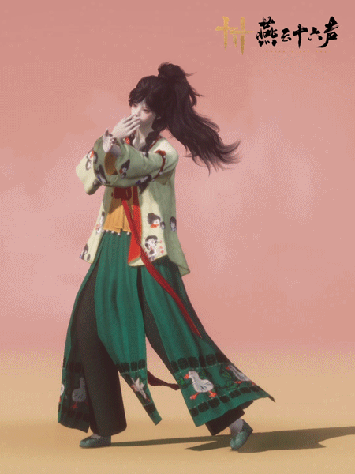
*개발 중 효과 시연입니다. 정식 출시 버전을 기준으로 해 주세요.
좋은 날 함께 모여, 움직여도 가만히 있어도 즐겁다!
9월 19일부터 10월 16일 5시까지, 협객은 이벤트 「좋은 날 함께 춤을」에 참여하면 200【장명주】의 할인 가격으로 원가 400【장명주】인 기간 한정 외형 선물 상자【좋은 날 함께 춤을 선물 상자】를 구매할 수 있습니다. 상자에는 상황 환경【眷烟罗】, 표정 동작【바람 소리를 듣고 춤추다】, 상황 자세【손바닥의 신기한 재주】가 포함됩니다.
신규 여식화영
【꽃처럼 보송보송】
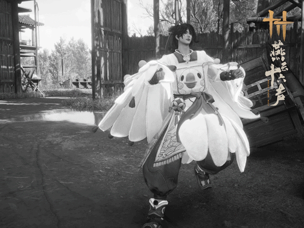
*사전 개발 중 효과 시연입니다. 최종 출시 내용을 기준으로 해 주세요.
“곰, 보송한 빛으로 꽃을 피우다!”
복슬한 발을 살짝 휘두르자 온 하늘의 별빛이 솜털 꽃으로 변해 사르르 떨어진다. 이 장면은 참으로 포근하지만, 이 기술의 이름은…… 빨리 말하면 정말 혀가 꼬인다.
새로운 여식화영【꽃처럼 보송보송】이 9월 19일부터 10월 16일 5시까지 기간 한정으로 판매됩니다. 그때 협객은 「상점」에서 【장명주】 300개로 구매할 수 있습니다.
「퉁소 소리, 천 겹의 물결」 기이한 술법 효과
【하늘에서 내려온 금빛 계란 프라이】
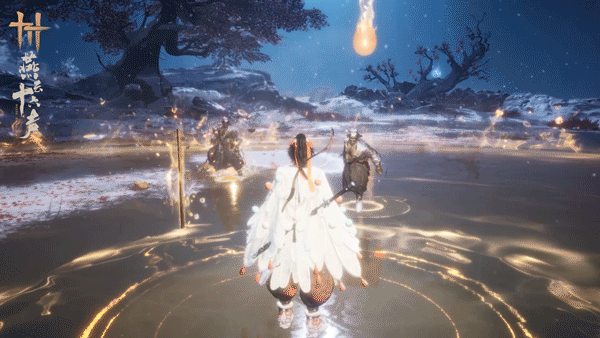
*사전 연구 중인 효과 시연이며, 최종 출시 내용을 기준으로 해 주세요.
퉁소 소리가 은은히 울리고, 밝은 달이 하늘에 떠 있습니다. 맑은 달빛이 흐르는 가운데, 황금빛으로 노릇하게 구워진 맛있는 계란 프라이가 아홉 하늘에서 떨어져 내리네요! 오늘 밤 이 풍경에 보름달과 둥근 달처럼 함께 모인 이들의 향기가 감돌아, 그야말로 빛깔과 향, 맛을 두루 갖췄습니다.
「퉁소 소리, 천 겹의 물결」 기이한 술법 효과 외형 【하늘에서 내려온 금빛 계란 프라이】가 9월 19일부터 10월 16일 5시까지 기간 한정으로 판매됩니다. 정가는 300【장명주】입니다. 해당 기간에 협객은 「상점」에서 할인 가격인 60【장명주】에 구매할 수 있습니다.
신규 동료 장신구
【해마다 오래도록 평안】, 【사방에서 뜻을 이루다】
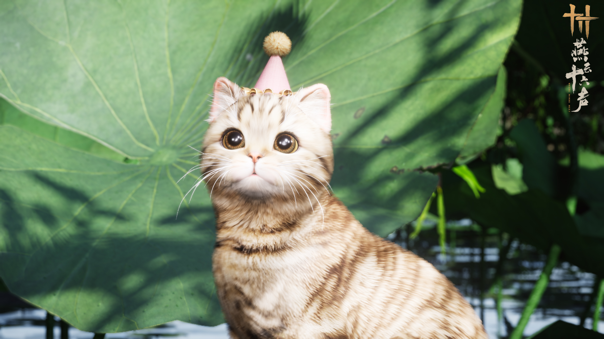
*개발 단계 효과 시연입니다. 최종 출시 내용을 기준으로 해 주세요.
강호의 앞날은 헤아리기 어렵습니다. 하늘을 꿰뚫는 재주까지 바라지는 않고, 그저 해마다 걱정 없이 오래도록 평안하고 건강하기를 바랄 뿐입니다. 아담한 휴대용 주머니에는 색실로 감꼭지 무늬를 수놓았습니다. 꽃받침은 네 장의 꽃잎으로 되어 있어, 사랑하는 반려동물이 가는 길마다 순조롭고 모든 일이 뜻대로 이루어지기를 지켜 줍니다.
9월 19일부터 10월 16일 5시까지, 협객은 「상점」에서 각각 【장명주】 60개로 신규 동료 장식 【해마다 오래도록 평안】과 【사방에서 뜻을 이루다】를 구매할 수 있습니다.
신규 동료 장식·고양이
【물고기가 넉넉해】
*개발 중인 효과 시연입니다. 최종 출시 내용을 기준으로 삼아 주세요.
신규 동료 장식·거위
【복 주머니·재물 주머니】
*사전 연구 중인 효과 시연입니다. 최종 출시 내용을 기준으로 해 주세요.
금실로 말린 작은 물고기를 곱게 수놓고, 화려한 비단 주머니가 탐을 자아내네. 강호를 누비면, 물고기가 넉넉해! 금실로 원보를 수놓고 붉은 비단으로 작은 주머니를 만들었네. 온 집안의 복을 담고 사방의 재물을 불러 모으네.
9월 19일부터 10월 16일 5시까지, 협객은 「상점」에서 각각 【장명주】 60개로 신규 동료 장식·고양이 【물고기가 넉넉해】와 동료 장식·거위 【복 주머니·재물 주머니】를 구매할 수 있습니다.